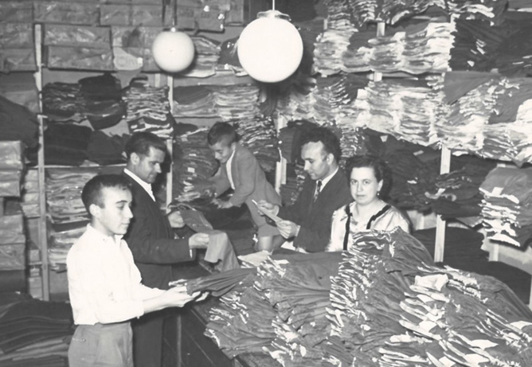
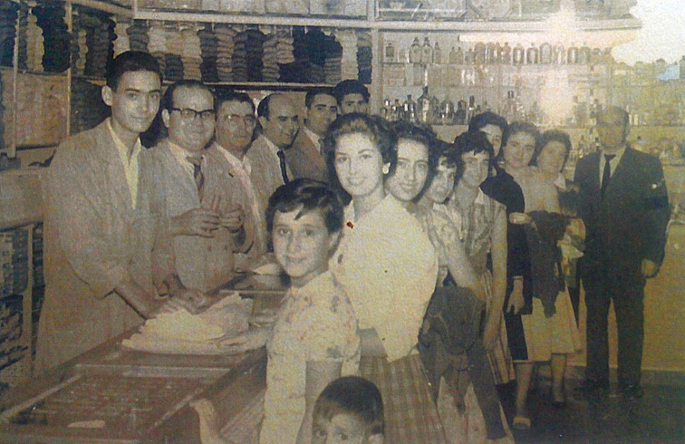

Comercios con historia
Confecciones Marin

Francisco Marín García nació en Montiel el 6 de febrero de 1929. Descendiente de una familia humilde dedicada a la agricultura, vivió en Montiel junto a su familia hasta los 12 años de edad. Al cumplir esta edad se marchó a la localidad de Torre de Juan Abad para trabajar en uno de los comercios más conocidos de la época, el de Don Tomás Martínez, aunque no tenía sueldo pero si comida y estancia. Cumplidos los 13 años, el citado comercio abrió otra tienda en Villahermosa, donde Francisco se desplazaba desde la Torre de Juan Abad en tartana a trabajar durante 3 días a la semana. Así estuvo hasta los 15 años, edad en la que dejo el comercio de “Tomás Martínez” y se marchó a Madrid con el fin de progresar aun siendo años muy complicados. En Madrid consiguió colocarse como dependiente en un comercio de tejidos ganando 250 pesetas al mes, sueldo que no le daba para mucho. Allí conoció y tuvo de compañero al que fuera uno de sus mejores amigos a lo largo de su vida, Vicente Martínez Moya. Ambos tenían dificultades para llegar a fin de mes, pero se les ocurrió la idea de vender tejidos a domicilio pidiendo permiso al dueño del comercio en el que trabajaban, que aceptó sin ningún problema.
Merceria Barchino
Mercería Barchino es uno de esos pequeños comercios que han sido y son grandes en historia. Un negocio familiar que nació en el año 1914, ni más ni menos, en la calle De la Virgen nº 4 de Valdepeñas conocida como “la cuesta palacios”. Su fundador fue Germán Barchino Ortega que inicio el negocio con una tienda al uso donde se podría encontrar de “todo”, desde comestibles hasta ropa, que poco a poco se fue especializando en artículos de mercería, sabanas, perfumería, etc.
Caminero

 La empresa, que data de mayo de 1935, fue fundada por Emilio Caminero Barrios tras haberse formado en los mejores talleres y sastrerías de Madrid de aquella época. Concretamente, se instaló en la calle Castellanos nº 3 de Valdepeñas.
Sastrería Caminero comenzó realizando labores de taller de sastrería, es decir, se dedicaba a coser piezas de traje para su confección. Con los años se dio cuenta que la ganancia estaba también en vender la tela y no solamente en coser las piezas que le llevaban. Fue entonces cuando comenzó a traer telas de los mejores fabricantes de la época como Brujas, Gorina, Tamburini, Jorge Domingo, etc…muchas de ellas prácticamente ya extinguidas. Con todo esto, consiguió un gran prestigio en la comarca y sus trabajos estaban muy bien valorados.
La empresa, que data de mayo de 1935, fue fundada por Emilio Caminero Barrios tras haberse formado en los mejores talleres y sastrerías de Madrid de aquella época. Concretamente, se instaló en la calle Castellanos nº 3 de Valdepeñas.
Sastrería Caminero comenzó realizando labores de taller de sastrería, es decir, se dedicaba a coser piezas de traje para su confección. Con los años se dio cuenta que la ganancia estaba también en vender la tela y no solamente en coser las piezas que le llevaban. Fue entonces cuando comenzó a traer telas de los mejores fabricantes de la época como Brujas, Gorina, Tamburini, Jorge Domingo, etc…muchas de ellas prácticamente ya extinguidas. Con todo esto, consiguió un gran prestigio en la comarca y sus trabajos estaban muy bien valorados.
Volver a la página de inicio.